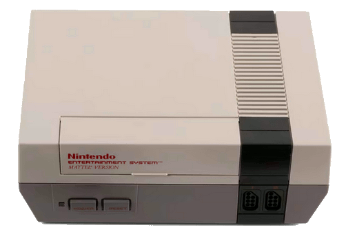

NES Video Game Console With Accessories and Packaging by Nintendo Co Ltd
The Nintendo Entertainment System (NES) revolutionised video gaming in the mid-late 1980s.
With the rise of the personal computer, video games could now be played at home rather than in the arcade. The Nintendo Corporation famously reestablished itself with the NES after a crash in the video game market from 1983-85 by producing a new business model for third-party developers. This was necessary due to the volumes of poorly made 'hacked' games that flooded the American market. This now-standard business made prevented this hack-tivity and ensured that certain developers would only create games for the Nintendo platform. The NES hit the markets in 1986 with certain modifications to iconic console's predecessor, the Famicon.
There were several different ways that the NES control decks were packaged, sometimes with only one game (the Basic Set retailing at $99.95), sometimes with promotional gear, different controllers and multiple games (the Deluxe Set retailing at $199.95). The object being collected is the Basic Set, containing the control deck, 2 controllers, and the Super Mario Bros. cartridge.
Nintendo ceased the production of NES consoles in 1995.
Summary
| Object Statement | Video game console with controllers (2), packaging, game cartridge and accessories, 'Nintendo Entertainment System' (NES), plastic / cardboard / paper / metal, by Nintendo Co Ltd, Japan, distributed by Mattel Inc, Australia, 1987 |
|---|---|
| Physical Description |
A two tone grey and black console with red lettering which has two player capability with the controllers plugging in on the front right of the console. The game cartridge is loaded in the flip top section of the console. There are two controllers, two power cables (one is an RFS with cords and the other an AV Adapter for Australia with cords), one game cartridge and original packing which consists of a cardboard box with two white styrofoam inserts. |
Production Notes
| Notes |
The Nintendo Entertainment System was designed in Japan and distributed in Australia (and Italy and the UK) via the Mattel Corporation in Great Britain. Two versions of the NES were distributed in these PAL regions, the Mattel version (distributed between 1986 and 1990 by Mattel Corporation) and the NES version (distributed by Nintendo Corporation to these regions after 1990). |
|---|
History
| Notes |
A video game console popular in the late 1980s for playing games on a television or monitor. It consists of a 2-tone grey and black console with red lettering. The console has 2-player capability with the controllers plugging in on the front right of the console. The game cartridge is loaded in the flip top section of the console and pressed down. Once a game is clicked into place, the power button on the front left of the console is pushed and the menu of the game appears onscreen. A reset button is also visible on the front of the console. The console connects to a television with red and yellow RCA cables or an RF connection. The box is ripped on the outside and there is an fluro orange sale sticker partially scratched off. One of the controllers isn't working and there is no manual included. This particular NES console came to the Powerhouse Museum after a public call was generated for 'The 80s are back' exhibition of December 2009 - March 2011. |
|---|
Source
| Credit Line | Gift of anonymous donor, 2013 |
|---|---|
| Acquisition Date | 18 November 2013 |
 |
Copyright for the above image is held by the Powerhouse and may be subject to third-party copyright restrictions. Please submit an Image Licensing Enquiry for information regarding reproduction, copyright and fees. Text is released under Attribution-Non Commercial-No Derivative licence. |